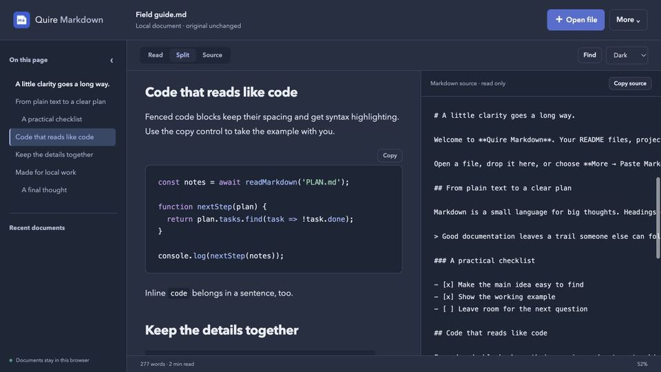

How to make and read tables in Markdown
Short answer: a Markdown table is a header row, a delimiter row of hyphens, and body rows, with cells separated by pipes (|). Colons in the delimiter row set the alignment.
Tables aren’t part of the original Markdown or of CommonMark. They come from GitHub Flavored Markdown, and most current tools support them.
Updated 15 October 2026. Rules follow the GitHub Flavored Markdown spec (version 0.29-gfm).
Write a table
- Write the header row
Put the column names between pipes:
| Tool | Price | Notes |. - Add the delimiter row
Under it, put at least one hyphen per column:
| --- | --- | --- |. The header and delimiter rows must have the same number of cells. - Set alignment
Use
:---for left,---:for right and:---:for centred columns. - Add the body rows
One line per row. Leave a blank line before and after the table.
- Check it
Open the file in a Markdown preview. If you see pipes and hyphens instead of a table, check the delimiter row first.
Put together, a small table looks like this in the source:
| Fruit | Colour | Price |
| :----- | :----: | ----: |
| Apple | red | 0.40 |
| Banana | yellow | 0.25 |
The first column is left-aligned, the second centred and the third right-aligned, which keeps the prices lined up.
Spaces around the cell text are ignored, so many people pad cells to line the pipes up in the source; it only affects readability. The pipes at the start and end of each line are optional too, but most people keep them.
Rules that trip people up
- Header and delimiter must match. If they have a different number of cells, it isn’t a table at all. Body rows are more forgiving: missing cells are left empty and extra cells are dropped.
- A pipe inside a cell must be escaped as
\|, even inside`code`. - One line per row. Block elements such as lists, code blocks and multiple paragraphs can’t go inside a cell. Inline formatting such as bold, links and code works.
- A blank line ends the table. So does another block such as a quote.
- There must be a header. pandoc’s pipe tables follow the same idea: “The header cannot be omitted.”
Merged cells and multi-line cells aren’t possible in this syntax. If you need them, write an HTML <table> where your renderer allows HTML, or use pandoc’s grid tables.
Tools that help
- Obsidian can insert a table from the Command Palette or right-click menu.
- VS Code’s preview (Ctrl+K V) shows the table beside the source as you type.
- Google Drive’s Markdown preview lays out tables, as described in our Chromebook guide.
Reading wide tables in Chrome
Quire Markdown is our extension, free on the Chrome Web Store. It shows GFM tables with their column alignment. A table wider than the page scrolls sideways on its own, so the rest of the document keeps a comfortable line length. In split view you can check the source and the result side by side, and when printing, tables are fitted to the page width.

Limits: it is a viewer, not an editor, and opens UTF-8 files up to 2 MB.
Questions
Why is my Markdown table showing as plain text?
Usually the delimiter row is missing or has a different number of cells from the header, or there is no blank line between the table and the paragraph above it. Some older renderers don’t support tables at all.
How do I put a line break inside a table cell?
Markdown itself can’t. Where the renderer allows HTML, <br> inside the cell works; Quire Markdown allows it.